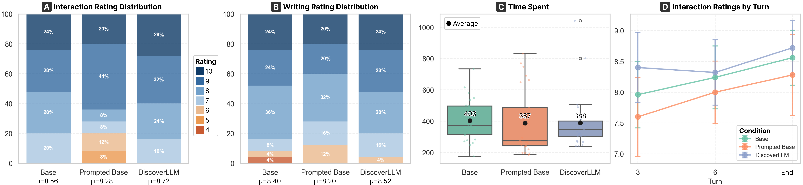

From Executing Intents to Discovering Them
TL;DR
LLM training and evaluation assume users start with fully-formed intents. Often they don't — users approach open-ended tasks with ill-defined intents they discover by reacting to what the model proposes. We built a user simulator that models this messy middle, then trained LLMs against it: models learn to diverge (explore options) when intents are unclear and converge (refine outputs) once they concretize.
The problem
Doesn't help when the user can't name what they want yet.
Hover a step or message to highlight the match.
A reasonable first draft. The user isn't sure why it doesn't land, but the following turns from the model don't help either.
Something feels off after the first draft, but the user can't name what.
The model asks a clarifying question. But the user cannot provide an answer.
The AI provides contrasting options that surface what the user actually wanted: a second-person perspective.
With this realized, the user can provide direct and specific feedback to the model, something they couldn't do three turns ago.
Most fine-tuning rewards complete answers or better-asked clarifying questions. Neither helps when users themselves don't yet know what they want.
User simulator
The user starts with a few abstract intents (the root) and discovers more specific child intents through the conversation. Each model response — whether a clarifying question or a generated artifact — can advance a node through three states: undiscovered → emerging → discovered. Reward is the count of newly discovered nodes per turn.
A neutral first draft. The model doesn't touch any node in the refinement space, so the tree is unchanged.
A child node can only be discovered after its parent, so reward signals progressive discovery.
Training pipeline
First, the simulator serves for data synthesis, scoring candidate turns that advance discovery. Then, it serves as a judge for online RL training, scoring model rollouts in real time.
Given an artifact (story, code), an LLM pulls out its concrete properties (tones, structures, formats), then gradually abstracts them to create a parent-child refinement tree.
At each turn the model samples N candidate replies. The simulator scores each by newly-discovered nodes. The winner is committed and used to continue the conversation.
SFT on Dtraj teaches the base model what good turns look like, producing M*. Offline DPO on Dpref then widens the gap between winners and losers, producing M**.
M** generates rollouts on fresh tasks. The user simulator scores each turn live to update the gradient. Output: M**online.
Mine each artifact for concrete requirements, abstract them upward, organize into a parent-before-child refinement tree.
N candidates per turn; the best is committed. (winner ≻ loser) per turn forms Dpref.
Two losses, one adapter: SFT teaches winners first, DPO then sharpens the chosen-over-rejected gap.
Model rolls out, simulator scores live, gradient updates the same LoRA, and the loop continues.
Mine each artifact for concrete requirements, abstract upward into a parent→child refinement tree.
N candidate responses per turn; simulator scores each by newly-discovered nodes. (winner ≻ loser) pairs form D_pref.
D_pref.
SFT on winning trajectories, then DPO on preference pairs, both drawn from Dpref. One LoRA adapter, two losses → M*.
M* rolls out on fresh tasks; the simulator judges every turn in real time; gradient updates the same LoRA.
Side-by-side
From the paper's case study. User wants a 500-word short story with a mid-twist. Base keeps refining the same draft. DiscoverLLM proposes options that help the user discover their intent.
Adapted from the paper's case study (§5). Same artifact, same Qwen3-8B base; only the fine-tuning differs.
Browse the dataset
Pick a domain and an artifact, and see the hidden intent tree, the full exchange, and turn-by-turn awareness shifts.
Results
| Creative Writing | Technical Writing | SVG Drawing | ||||||||||
|---|---|---|---|---|---|---|---|---|---|---|---|---|
| Disc↑ | Sat↑ | ITR↑ | #Tok↓ | Disc↑ | Sat↑ | ITR↑ | #Tok↓ | Disc↑ | Sat↑ | ITR↑ | #Tok↓ | |
| Base | 38.2 | 30.0 | 20.1 | 3.09 | 49.1 | 36.0 | 21.2 | 3.32 | 45.6 | 32.5 | 21.6 | 3.59 |
| Prompted Base | 37.7 | 26.4 | 26.0 | 2.97 | 43.6 | 33.5 | 24.2 | 3.05 | 40.0 | 30.9 | 25.1 | 3.18 |
| CollabLLM | 37.3 | 28.0 | 32.6 | 2.93 | 45.8 | 33.7 | 24.9 | 3.13 | 43.0 | 29.9 | 30.8 | 3.18 |
| SFT | 40.7 | 33.4 | 92.3 | 1.71 | 47.1 | 35.2 | 81.6 | 2.09 | 45.4 | 34.9 | 66.9 | 2.92 |
| DPO | 40.5 | 29.2 | 33.1 | 2.91 | 47.2 | 34.2 | 27.3 | 3.11 | 45.3 | 32.5 | 29.2 | 2.89 |
| SFT+DPO | 42.4 | 28.4 | 32.9 | 2.77 | 49.0 | 35.9 | 31.3 | 2.94 | 51.6 | 37.0 | 44.6 | 2.61 |
| Rel. Improv. | +11.0% | +11.3% | +183% | −44.7% | −0.0% | −0.0% | +227% | −11.4% | +13.2% | +13.8% | +117% | −27.3% |
Generalization (held-out)
Trained only on creative writing. Evaluated on web dev, travel planning, & more (50 unseen artifacts).
Three-turn behavior patterns
Slide a 3-turn window through each conversation. What does the model do in those three turns? Pure refine (keep iterating one draft), pure explore (offer new options each time), or some mix.
Base is stuck refining (91%). Our methods shift the mass to mixed, the behavior that drives discovery.
User study
75 Prolific participants · randomly assigned condition · 8+ turns each
vs 80% Base · 72% Prompted Base
Participants reach high satisfaction by turn 3 and stay there. Baselines climb more slowly and never quite catch up.
What participants said
“anticipated what I was thinking”
on DiscoverLLM
“creating something amazing from the start”
on DiscoverLLM
“turning brief thoughts into fluent sections”
on DiscoverLLM
“repeated things, only made minor changes”
on Base
“cliched and generic outputs”
on Base
“wasted time before starting the task”
on Prompted Base
Honest limitations participants noted
Some found DiscoverLLM's options “overwhelming” or “a bit standardised.” Others noted it occasionally made “overly aggressive changes,” removing an idea when asked to adjust it. Open direction: more diverse exploration, less destructive refinement.
Citation
@article{kim2026discoverllm,
title={DiscoverLLM: From Executing Intents to Discovering Them},
author={Kim, Tae Soo and Lee, Yoonjoo and Yu, Jaesang and Chung, John Joon Young and Kim, Juho},
journal={arXiv preprint arXiv:2602.03429},
year={2026}
}